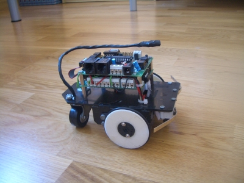
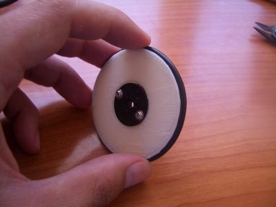
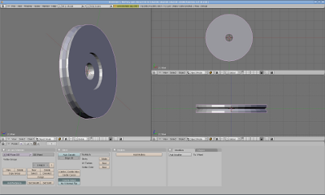
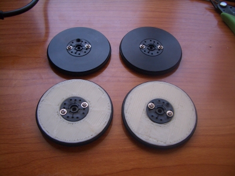

Os presentamos la tercera generación de ruedas para el robot Skybot. Son iguales que las actuales pero “imprimibles” en una impresora 3D. Las ruedas actuales son muy buenas y profesionales, pero es necesario fabricarlas en un taller mecánico. La versión G3 nos la podemos imprimir tranquilamente en nuestra casa usando una Reprap.
Aunque el acabado es un poco tosco, las ruedas funcionan perfectamente. Aquí las podéis ver en acción:
Lo más importante es que la goma tórica de las ruedas G2 encaja perfectamente en las G3. Se tarda 27 minutos en imprimir cada rueda y unos 3 en montarla. En este álbum de fotos podéis ver cómo realizar el montaje.
En esta foto se puede ver la rueda ya montada, con la goma y la corona del servo atornillada.

Está diseñada con Blender. Tardé una media hora en hacerla, basándome en los planos de la G2.
Aquí podéis ver un pantallazo del blender en acción:

Y en esta otra foto podéis comparar las ruedas G2 con las G3.

Es Skybot es un robot libre, muy fácil de construir. Ahora lo es aún más, ya que una de las partes más complicadas se puede “imprimir” tranquilamente desde tu casa. Eso sí, necesitas ponerle la goma tórica.
La facilidad para diseñar piezas y “materializarlas” permite dar rienda suelta a tu imaginación. Estas ruedas son una copia de la G2…. pero … ¿Por qué no imprimir una rueda de tipo wheg en vez de la tradicional? 😉 Con una impresora 3D en una tarde lo puedes hacer…